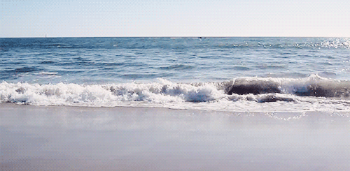
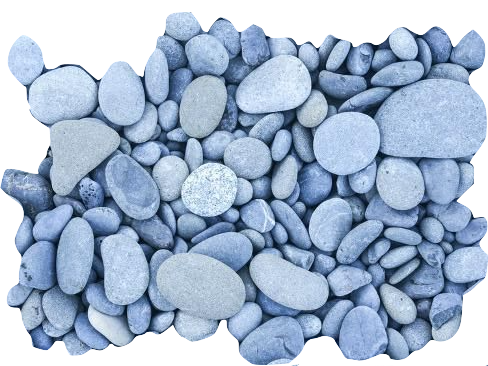
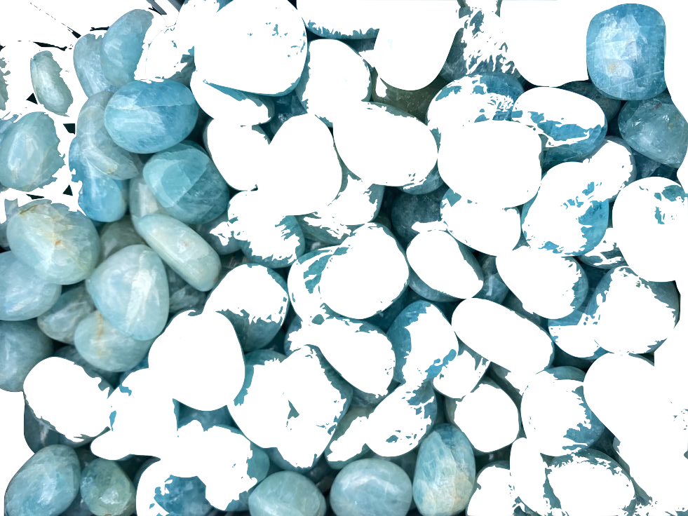
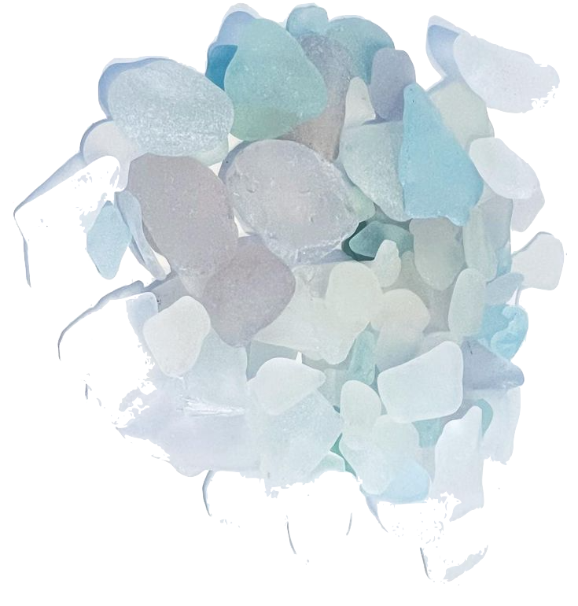
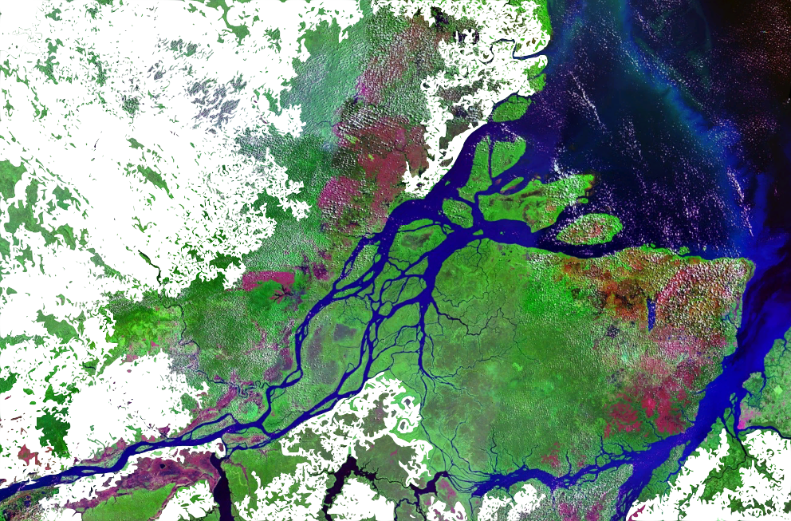

People, as curious primates, dote on concrete objects that can be seen and fondled.
God dwells among the details, not in the realm of pure generality. We must tackle and grasp the larger, encompassing themes of our universe, but we make our best approach through small curiosities that rivet our attention - all those pretty pebbles on the shoreline of knowledge. For the ocean of
truth washes over the pebbles with every wave, and they rattle and clink with the most wondrous din.
(Stephen Jay Gould)
Estuaries are incredibly dynamic systems, where temperature, salinity, turbidity, depth and flow all change daily in response to the tides. This dynamism makes estuaries highly productive habitats, but also make it difficult for many species to survive year-round. As a result, estuaries large and small experience strong seasonal variation in their fish communities.[27] In winter, the fish community is dominated by hardy marine residents, and in summer a variety of marine and anadromous fishes move into and out of estuaries, capitalizing on their high productivity.[28] Estuaries provide a critical habitat to a variety of species that rely on estuaries for life-cycle completion. Pacific Herring (Clupea pallasii) are known to lay their eggs in estuaries and bays, surfperch give birth in estuaries, juvenile flatfish and rockfish migrate to estuaries to rear, and anadromous salmonids and lampreys use estuaries as migration corridors.[29] Also, migratory bird populations, such as the black-tailed godwit,[30] rely on estuaries.
Two of the main challenges of estuarine life are the variability in salinity and sedimentation. Many species of fish and invertebrates have various methods to control or conform to the shifts in salt concentrations and are termed osmoconformers and osmoregulators. >Many animals also burrow to avoid predation and to live in a more stable sedimental environment. However, large numbers of bacteria are found within the sediment which has a very high oxygen demand. This reduces the levels of oxygen within the sediment often resulting in partially anoxic conditions, which can be further exacerbated by limited water flow.
Phytoplankton are key primary producers in estuaries. They move with the water bodies and can be flushed in and out with the tides. Their productivity is largely dependent upon the turbidity of the water. The main phytoplankton present are diatoms and dinoflagellates which are abundant in the sediment.
A primary source of food for many organisms on estuaries, including bacteria, is detritus from the settlement of the sedimentation.
